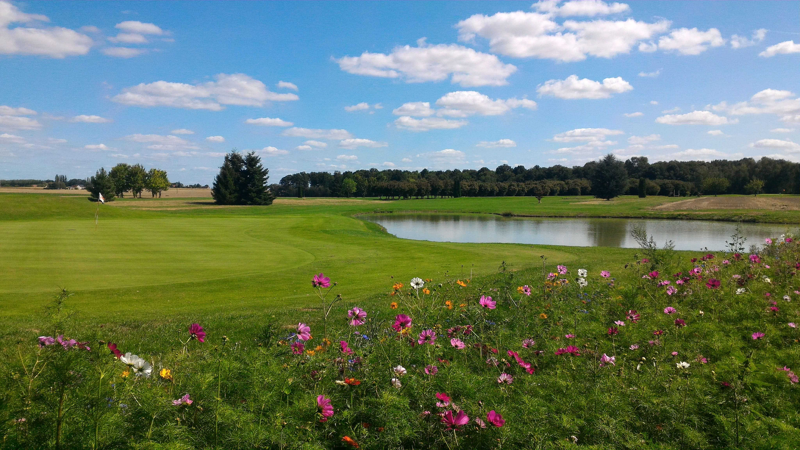
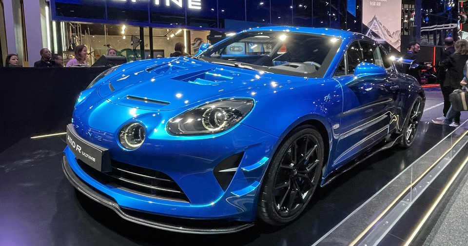

In this page, I'm going to tell you about my favorite activities:
Video games
One of my favorite activities is playing video games. I enjoy simulation, action-adventure, and rally games. I mainly play GTA 5 and WRC.

Sports
During my teenage years, I mainly played at the La Bosse golf course, but I stopped due to a lack of time. I would love to start again once I finish my studies. I was fortunate to discover this sport by choosing it as an option in college. In this sport, I prefer the putting green.
Today, I do 2 to 3 training sessions a week.
Cars
I also like cars, especially sports cars. My favorite brands are Porsche and Alpine. I also really like the Swedish brand Koenigsegg, which isn’t very well-known to the public.
